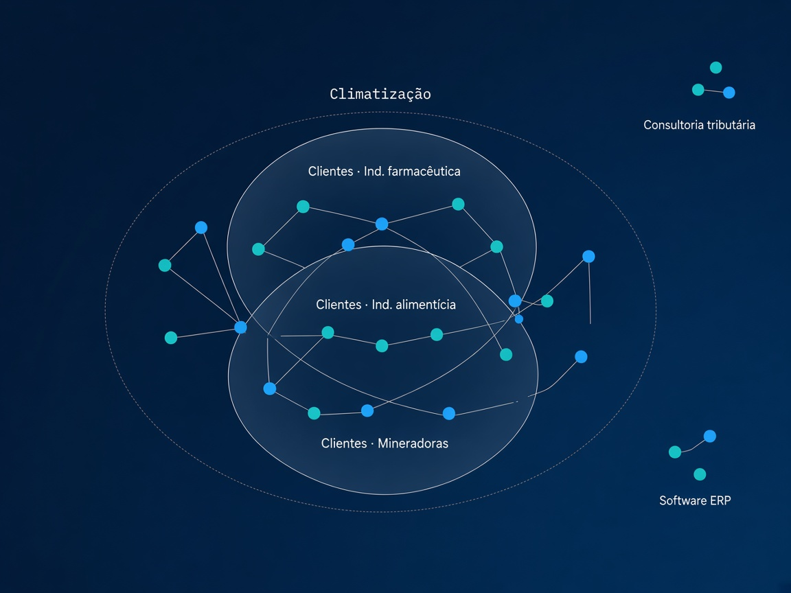

Sessão técnica, integração
Busca
Fornecedor
40M+ empresas
busca multi-vetor
API · MCP · agentes
modelo próprio
atualização contínua
API
MCP
Agente
buscafornecedor.com.br · deck técnico
01 · Visão geral
40M+
estabelecimentos da Receita Federal como ponto de partida.
Busca Agêntica
Em operação por compradores B2B
Desafios resolvidos para o usuário final
Busca por CRM
A pesquisa fica presa à base de fornecedores já cadastrados. Quem ainda não está no CRM simplesmente não aparece.
CNPJ e CNAE não bastam
O cadastro formal não descreve o que a empresa entrega de fato. O site traz essa evidência, mas ler milhares de páginas à mão não escala.
Prospecção manual por busca
Encontrar fornecedores novos ainda depende de pesquisa no Google. O ranqueamento baixo esconde bons candidatos e consome tempo e esforço do time.
Visão geral · problema e base de usuários
02 · Construção do banco
Do cadastro público
ao perfil pesquisável.
01
Base da Receita
Partimos de uma base nacional com mais de 40 milhões de estabelecimentos, o universo completo de empresas do país como ponto de partida.
02
Filtro de recorte
Excluímos MEI, autarquias, aberturas recentes e filiais, para focar em empresas com maior potencial de atendimento B2B.
03
Descoberta de site
Com os dados cadastrais, enriquecemos cada empresa elegível até encontrar o site oficial, a fonte da evidência de mercado.
04
Scrape em massa
Rede de proxies e controle de acesso para contornar bloqueios, lidar com sites lentos e escalar a leitura para milhões de páginas, às vezes com mais de uma tentativa.
05
Perfil com modelo próprio
Para reduzir custo, um modelo auto-hospedado, treinado para esta tarefa, extrai dados do site e monta o perfil estruturado da empresa.
06
Banco de busca
Cada perfil vira dimensões de busca (produto, serviço, clientes) para o comprador encontrar por intenção, não só por palavra-chave.
Construção · da Receita ao índice de busca
02a · Scrape em massa
Ler milhões de sites
sem derrubar o acesso.
Partição de carga, não uma fila única
Várias faixas de proxy trabalham em paralelo, cada uma com seu ritmo. O objetivo é escalar a leitura e reduzir bloqueios, sem depender de um único caminho.
01
Anti-bloqueio
O acesso simula um navegador real e distribui as requisições entre várias origens, para sites com proteção anti-bot não cortarem o lote.
02
Proxies em faixas
A carga é dividida entre provedores e faixas, cada uma com limite próprio. Não é tentar A e só depois B: as faixas operam juntas.
03
Sites lentos e instáveis
Há espera controlada, limite por domínio e pausa automática quando um host falha demais. O resto do lote segue.
04
Escala e nova tentativa
Desenhado para milhões de páginas. Se a primeira leitura falhar ou o site exigir mais de um acesso, o sistema reprocessa sem refazer tudo do zero.
Scrape · proxies · controle de ritmo · escala
02b · Como o perfil é pesquisado
Seis dimensões
para uma busca guiada por atributos.

Proximidade e nicho de cliente
O grafo mostra empresas semanticamente próximas no setor. Os conjuntos marcam diferenciação no vetor de clientes (farmacêutica, alimentícia, mineradoras), sem mudar a visualização em grafo.
Busca por atributos pontuais: o ranking combina similaridade semântica (vetores densos) com validação de termos específicos via BM25 (vetor esparso).
Denso
Descrição
Visão geral da empresa, o que ela é e como se apresenta no mercado.
Denso
Clientes
Clientes e projetos mais atuais, com foco no trabalho recente.
Denso
Público-alvo
Perfil de quem a empresa costuma atender, pelo histórico de atuação.
Denso
Produtos
O que a empresa vende: catálogo e ofertas de produto.
Denso
Serviços
O que a empresa presta: instalação, consultoria, manutenção e afins.
Esparso · BM25
Termos exatos
SKUs, marcas, códigos e jargões. Valida a string no perfil, não só o sentido.
Adições planejadas para fevereiro de 2027
Novo · denso
Certificações
Licenças, certificados e documentos do fornecedor no perfil.
Novo · esparso
Nomes de clientes
Busca direta por empresas que já possam ter sido atendidas.
Índice multi-vetor · grafo + conjuntos de cliente · BM25
03 · Processamento da requisição
Como a consulta
percorre o sistema.
01
Usuário
Texto natural
A pessoa descreve a necessidade em linguagem comum: produto, serviço, região, urgência.
→
02
Agente (ou usuário)
Interpreta e monta
Lê a intenção, monta os vetores de texto, ajusta pesos e payloads. Em regra isso vem do agente; o usuário também pode fazer à mão.
→
03
API
Gera o embedding
Dentro da API, o texto preparado vira embedding, a representação numérica usada na busca semântica.
→
04
API
Consulta o banco
A API consulta o banco vetorial com os pesos e filtros definidos e devolve a shortlist ranqueada.
1 e 2
Ficam do lado de quem consome (usuário e, na prática, o agente).
3 e 4
Rodam dentro da API BuscaFornecedor, sem o cliente precisar montar embedding ou falar com o Qdrant.
Fluxo · texto → interpretação → embedding → banco
04 · Retroalimentação
O banco acompanha
o que o site mostra hoje.
Processo contínuo: detectar mudanças nos sites já explorados, revisitar essas páginas e remontar o perfil com as informações novas, para a shortlist não envelhecer.
01
Detectar mudanças
Monitoramos sites já conhecidos para identificar alterações relevantes de conteúdo: novas ofertas, reposicionamento, páginas atualizadas.
→
02
Explorar de novo
Recoletamos o site com o mesmo cuidado da primeira passagem, incluindo páginas internas importantes e casos de carregamento lento.
→
03
Refazer o perfil
O modelo reconstrói o perfil com a evidência nova e atualiza as dimensões de busca: produto, serviço, clientes e demais vetores.
Atualização contínua · evidência fresca no índice
05 · Integração com Pipefy
Três modos de integração
sobre o mesmo núcleo de busca.
REST, MCP e Agente compartilham o mesmo serviço de ranking (multi-vetor + BM25 + filtros). A diferença está no contrato de consumo e no grau de orquestração.
01 · REST API
Integração HTTP
POST /search/text recebe a necessidade, pesos por dimensão e filtros. GET /config devolve o contrato público da busca. Auth por API key ou JWT. No Pipefy, automação ou HTTP Request dispara a busca em mudança de fase. Adequado a fluxos estáveis, com regra previsível no pipe.
Pipefy
1 Texto
2 Interpreta / pesos
API BF
3 Embedding
4 Consulta
02 · MCP
Protocolo de ferramentas
Endpoint /mcp (Streamable HTTP) com tools tipadas: search_text, get_config e tools de conversa. Paridade 1:1 com o REST, mesmo motor e mesma auth. Cliente MCP-compatible consome as tools sem reimplementar Qdrant, embeddings ou BM25. Útil para padronizar o contrato entre Pipefy, Copilot, Claude e outros clientes MCP.
Pipefy + Tool MCP
1 Texto
2 Interpreta / pesos
API BF via MCP
3 Embedding
4 Consulta
03 · Agente
Orquestração conversacional
Camada de agente interpreta a intenção e decide quando chamar a busca. Antes do search_text, ajusta pesos e filtros com base no diálogo. Em multi-turno, refina a shortlist sem o usuário montar a query técnica. O resultado volta no card; aprovações e governança continuam no Pipefy. Encaixa quando cada solicitação é diferente e precisa de raciocínio, não só HTTP fixo.
Pipefy
1 Texto
Agente BF + API
2 Interpreta / pesos
3 Embedding
4 Consulta
Integração · REST · MCP · Agente